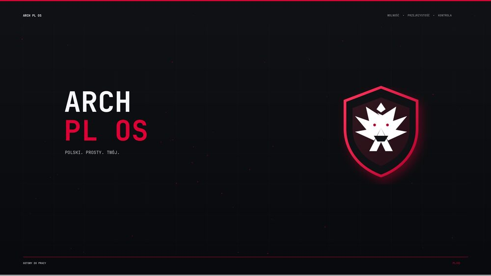
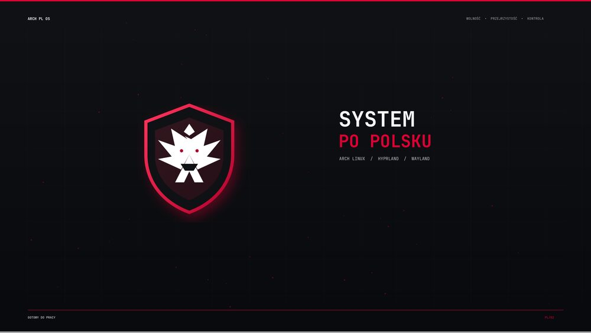
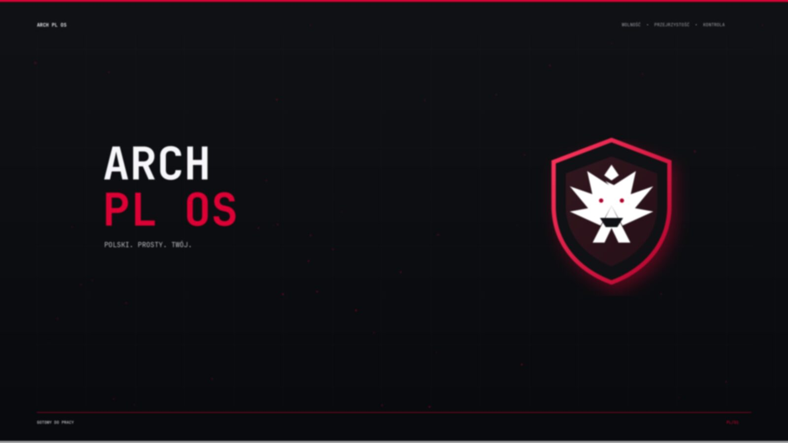

ARCH PL OS zamienia świeży Arch Linux w spójne środowisko Hyprland: polski panel, polski launcher, polskie powiadomienia, karmazynowo-biały motyw nawiązujący do naszej flagi i Bielika z logo projektu, oraz automatyczny backup przed każdą zmianą. Cała instalacja to pięć poleceń w terminalu.

Tak wygląda pulpit zaraz po instalacji — dwa ekrany, jedna spójna kompozycja w karmazynie i bieli.
1. Zanim zaczniesz
Potrzebujesz działającego Arch Linux, połączenia z internetem, zwykłego konta użytkownika z dostępem do sudo oraz uruchomionej sesji Hyprland. Instalator nie usuwa Twoich plików osobistych.
~/.local/state/arch-pl-os/kopie/.Sprawdź połączenie z internetem
ping -c 3 archlinux.org
Zaktualizuj system
sudo pacman -Syu
2. Zainstaluj Git
sudo pacman -S --needed git
Git pobierze kod projektu i pozwoli później aktualizować cały pulpit jednym poleceniem, bez ręcznego kopiowania plików.
3. Pobierz ARCH PL OS
git clone https://github.com/zi3lak/arch-pl-os.git cd arch-pl-os
Repozytorium zawiera wyłącznie kod, konfiguracje i grafiki systemowe — żadnych haseł, tokenów ani danych osobistych.
4. Najpierw wykonaj próbę
./instaluj.sh --proba
Tryb próbny pokazuje katalog docelowy oraz listę brakujących pakietów. Nie modyfikuje żadnego pliku — możesz go uruchamiać dowolnie wiele razy.
5. Uruchom instalację
./instaluj.sh
Instalator wykonuje po kolei: kopię bezpieczeństwa obecnej konfiguracji, doinstalowanie brakujących pakietów, wygenerowanie polskiego locale pl_PL.UTF-8, wykrycie monitorów i dopasowanie tapet 4K, a na końcu podmianę Hyprland, Waybar, Wofi, Alacritty i Dunst na wersje ARCH PL OS.


Para tapet 4K, którą instalator automatycznie dopasowuje do liczby i układu wykrytych monitorów.
6. Sprawdź rezultat
./sprawdz.sh
Każdy element powinien otrzymać status [DOBRZE] — od konfiguracji Hyprland i Waybar, przez tapety i animację powitalną, po działające procesy panelu, tapet, bezczynności i powiadomień. Jeśli pojawi się [BŁĄD], przeczytaj nazwę elementu i uruchom instalator ponownie — jest bezpieczny do wielokrotnego użycia.

Ekran blokady Hyprlock po polsku — pojawia się automatycznie po 10 minutach bezczynności lub pod Super + L.
7. Uruchom ponownie sesję
Pełny efekt zmiennych językowych będzie widoczny dopiero po wylogowaniu i ponownym zalogowaniu. Nie musisz restartować całego komputera.
Opcje zaawansowane
./instaluj.sh --bez-pakietow— nie uruchamia Pacmana, przydatne przy słabym łączu../instaluj.sh --bez-locale— nie zmienia konfiguracji języka systemowego../aktualizuj.sh— pobiera zatwierdzone zmiany z repozytorium i stosuje je ponownie../przywroc.sh— wraca do poprzedniego pulpitu z ostatniej kopii.
Co dokładnie się zainstaluje
Instalator korzysta wyłącznie z pakietów oficjalnych repozytoriów Arch Linux i doinstalowuje tylko te, których jeszcze nie masz.
Pełna, zawsze aktualna lista pakietów: pakiety.txt. Skąd karmazyn, biel i Bielik w logo — zobacz sekcję Symbolika na stronie głównej.